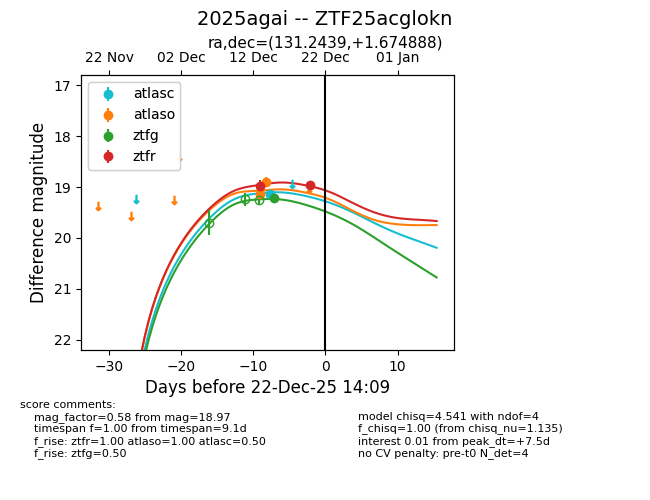
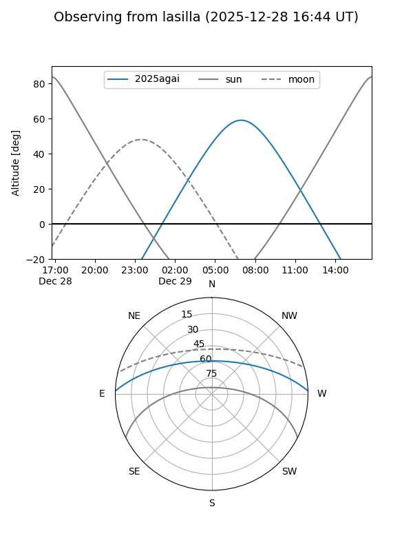
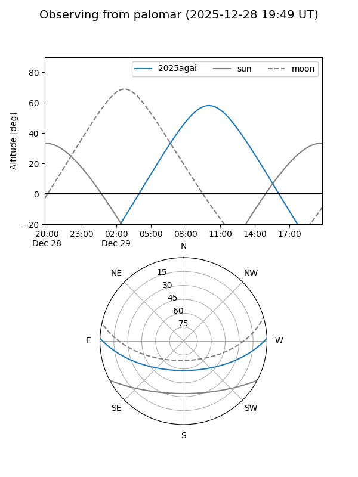
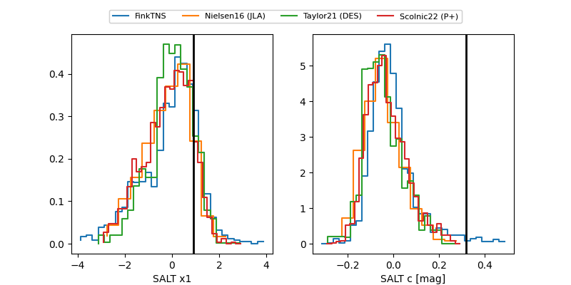

2025agai
Target 2025agai at 2025-12-22 14:11
Aliases and brokers:
FINK: fink-portal.org/ZTF25acglokn
Lasair: lasair-ztf.lsst.ac.uk/objects/ZTF25acglokn
ALeRCE: alerce.online/object/ZTF25acglokn
TNS: wis-tns.org/object/2025agai
YSE: ziggy.ucolick.org/yse/transient_detail/2025agai
alt names
ZTF25acglokn (ztf,fink_ztf)
2025agai (tns,yse)
Coordinates:
equatorial (ra, dec) = 131.2439,+1.67489
equatorial (HMS+DMS) = 08:44:58.53,+01:40:29.60
galactic (l, b) = (225.1648,+25.86382)
Flags:
Photometry:
last atlasc=19.14, atlaso=18.90, ztfg=19.21, ztfr=18.97
1 atlasc, 2 atlaso, 1 ztfg, 2 ztfr detections
Lightcurve

Visibility


Additional plots
